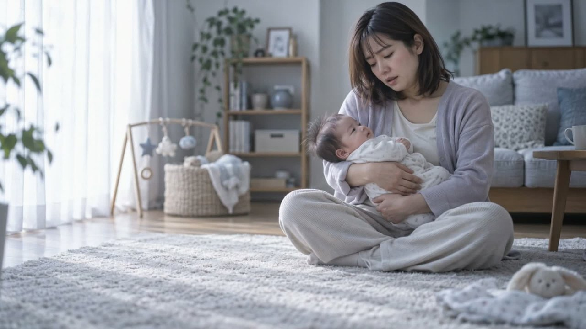
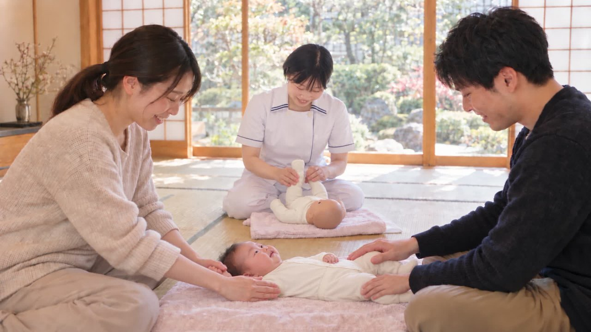
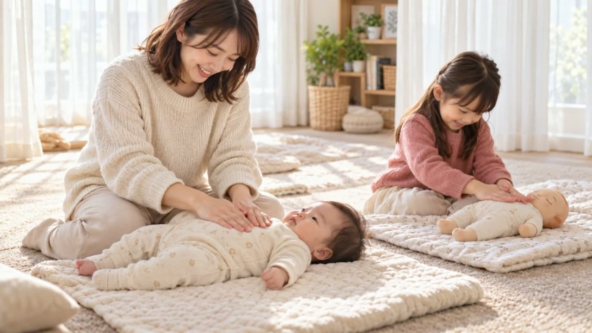
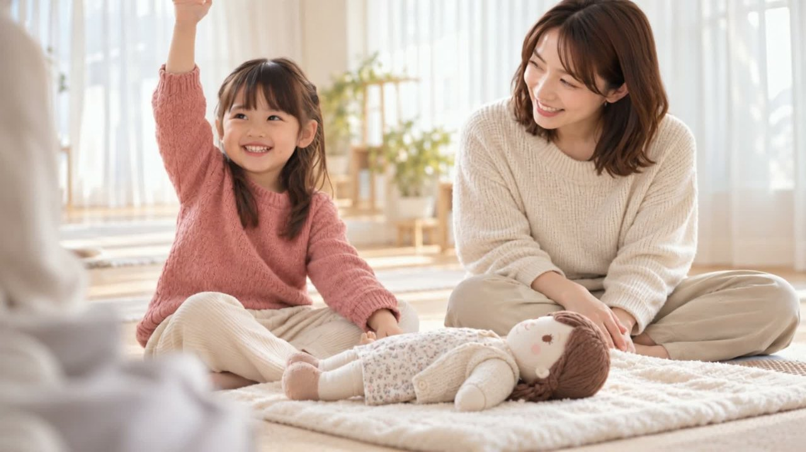

S010:00–0:04不安げな表情で赤ちゃんを抱くママ（動画）
テロップ
夜泣き、発育… これで いいのかな？
ベビーマッサージサロン／新潟県長岡市稲保南1丁目244-9 前回（v3・50秒版）のページはこちら
61秒・13カット。前回版に S10b・S10c（おくるみタッチケアの説明） を追加し、最後のご案内を 公式LINEのQRコード に変更しました。
再生できない場合は こちらから直接ダウンロード してください。
各カットの代表フレームです（テロップは本番文言）。S10b・S10cは、おくるみ基本巻きの解説動画の手順を参考に動きを作っています。

S010:00–0:04不安げな表情で赤ちゃんを抱くママ（動画）
夜泣き、発育… これで いいのかな？
不安の深掘り（動画）
はじめての子育ては、わからないことばかり。
来店・カウンセリング（諏訪様のお写真を参考に生成・動画）
ベビーマッサージサロン Lien

S040:15–0:20和室での施術シーン（先生は諏訪様のお写真を参考に生成・動画）
ご夫婦で、ふれあい時間
安堵の表情（動画）
話を聞いてもらえる 安心感。
4人家族の朝・きょうだいの嫉妬（動画）
きょうだいが、寂しくなる日も。

S070:27–0:32家族でLienへ・きょうだい参加（動画）
きょうだいも 一緒に！

S080:32–0:37お姉ちゃんの笑顔・人形で練習（動画）
お人形で お世話体験！
講師2名による実技指導（諏訪様のお写真を参考に生成・動画）
講師育成講座 開講中！
おくるみタッチケア（動画）
おくるみ タッチケア教室
先生がおくるみの基本巻きを実演（手前の布を胸へかけて脇へ折り込む）。先生は諏訪様のお写真を参考に生成・動画
おくるみの巻き方や 新生児期の接し方
妊婦さんが人形で巻き方を練習（下の角を肩まで持ち上げる）。先生が手を添えて指導・動画
産まれてすぐ役立つ方法を 妊娠中から学べます
エンドカード：店舗情報＋公式LINE QR＋Instagram QR
ご予約・ご相談は 公式LINEから
講師役は諏訪様ご本人のお写真を参考に、諏訪様らしさが伝わるよう生成しています。 生徒様・ご家族・妊婦さんはオリジナルの人物として生成しており、実在の方の顔はそのまま描いていません。